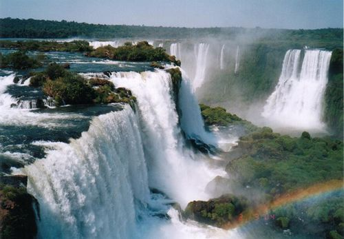

Parque provincial de Ischigualasto o Valle de la Luna.
Es un área protegida de 275.369 hectáreas, célebre a nivel científico, ya que resguarda una importante reserva paleontológica.
Glaciar Perito Moreno.

Es una gruesa masa de hielo ubicada en el departamento Lago Argentino de la provincia de Santa Cruz, en el sudoeste, en la región de la Patagonia.
Quebrada de Humahuaca.

Es un profundo y angosto surco de origen tectónico-fluvial ubicado íntegramente en la provincia de Jujuy. El clima es muy seco.
Cataratas del Iguazu
Se localizan en el río Iguazú, en el límite entre la provincia argentina de Misiones y el Estado brasileño de Paraná.
Son áreas protegidas por ambos países: el sector de la Argentina se encuentra dentro del Parque Nacional Iguazú.